Want to contribute? Send us a few really good photos that you have taken.
Email them to membership@neara.org.
Please include a short caption, including the county and state in which you took the photo,
the date you took the photo, and the name and description you would like to include in the caption.
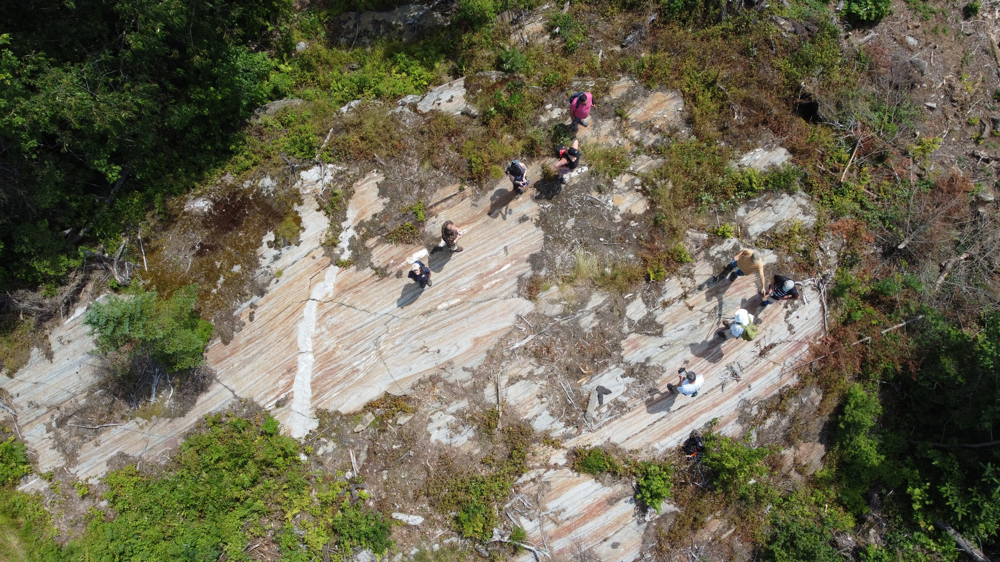"Magic Rock", Oxford County ME, 2022-07-16, by Walter van Roggen; click to see details
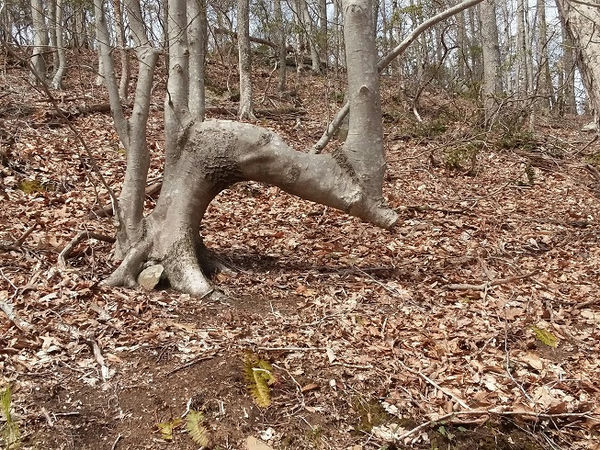
Tree pointing at perched boulder, New London County CT, by Chris Loughlin
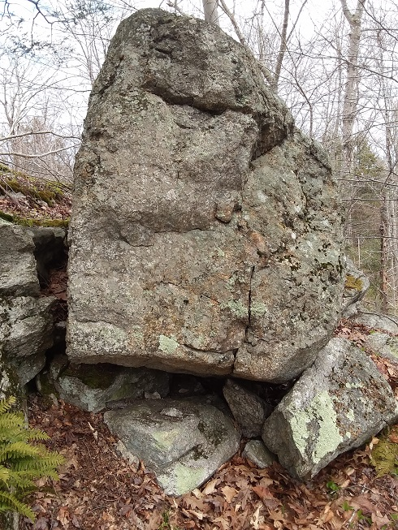
Perched boulder, pointed at by bent tree, New London County CT, by Chris LoughlinNiche, Franklin County MA, 2021-03-20, by Su HoyleObservation seat facing north, Franklin County MA, 2021-03-27, by Su HoyleWest portal, Franklin County MA, 2021-03-27, by Su HoyleSpring niche, Franklin County MA, 2021-03-27, by Su Hoyle
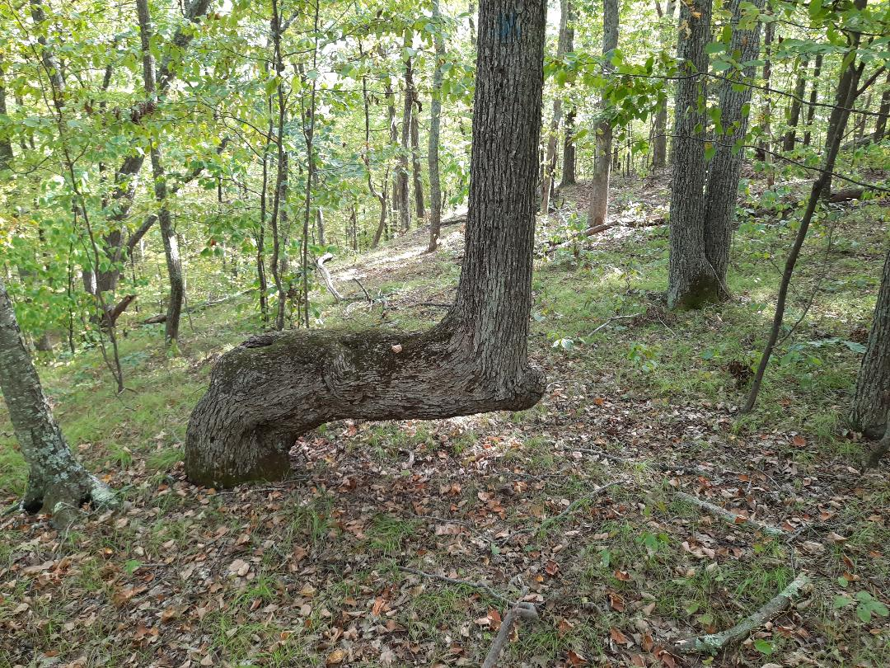
Trail marker tree, Tolland County CT, 2020-09-13, by Chris Loughlin
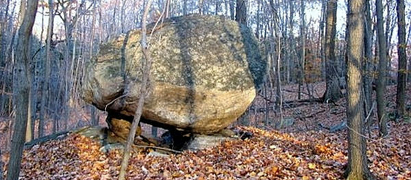
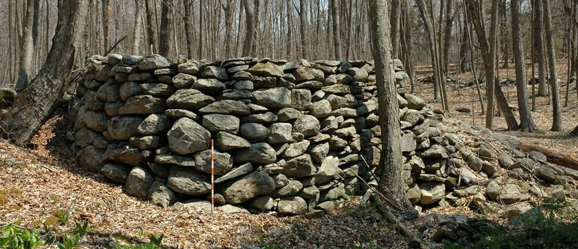
Some of the Embden petroglyphs, Somerset ME
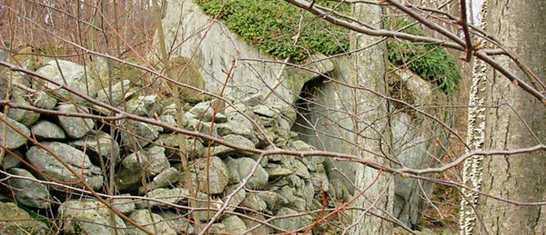
Platform, Putnam County NY
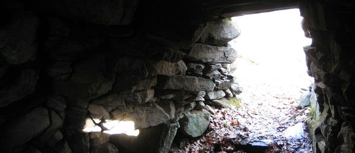
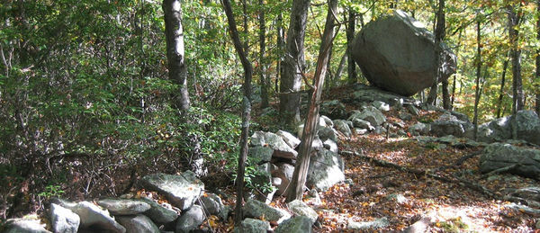
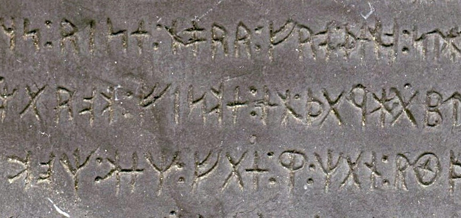
A section of the Kensington Rune Stone, Douglas County MNKing Phillip's Cave, Norfolk County MA
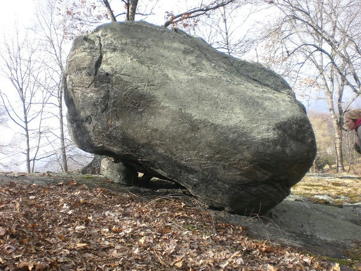
"Lion Rock", by Teresa Bierce
If you contribute photos to NEARA, you retain copyright of your works,
but you grant NEARA the non-exclusive right to publish them on its web sites,
if NEARA chooses to do so.
If you are a current member of NEARA and have given us your email address,
you can see a lot more photos from the Archives at
SiteDB.org.